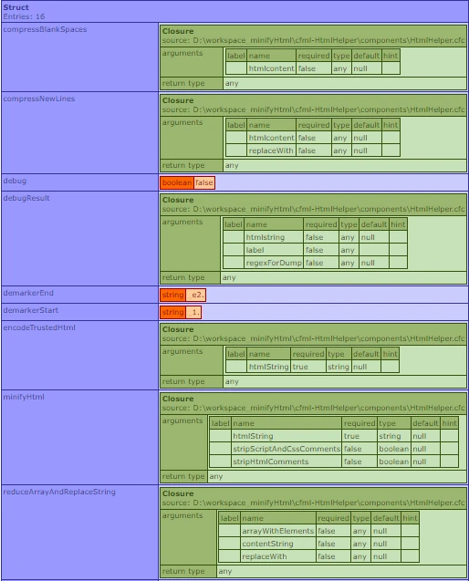

Minify your CFML generated HTML at runtime!
- minify CFML generated html content
- encode trusted HTML content containing non-compliant/unescaped characters like e.g. €, ü, ö, ß, etc. within a tags inner HTML
<!DOCTYPE html>
<head>
<title>Hot CFML Page & content</title>
<meta charset="utf-8">
<meta http-equiv="X-UA-Compatible" content="IE=edge">
<meta name="viewport" content="width=device-width, initial-scale=1">
<style> /* some comment
*/
.someClass{
font-size: 1rem; /* set font size */ } </style>
<meta name="description" content="Just some Example">
<link rel="stylesheet" href="css/main.css">
</head> <body>
<!-- Say "Hello" to the CFML coders! --> <p>Hello to all CFML devs üòÄ ü§© around the üåé!!! </p>
<script> /* this is just some
embedded JavaScript */
console.log('Log Something'); // this is just some Javascript </script> </body> </html>
<!DOCTYPE html><head><title>Hot CFML Page & content</title><meta charset="utf-8"><meta http-equiv="X-UA-Compatible" content="IE=edge"><meta name="viewport" content="width=device-width, initial-scale=1"><style> .someClass{ font-size: 1rem; } </style><meta name="description" content="Just some Example"><link rel="stylesheet" href="css/main.css"></head><body><p>Hello to all CFML devs 😀 🤩 around the 🌎!!! </p><script> console.log('Log Something');</script></body></html>
The function minifyHtml() minifies CFML generated html content by:
- stripping HTML comments
- stripping JavaScript multline comments
- stripping JavaScript singleline comments
- stripping CSS comments
- stripping whitespaces, such as all double tabs/spaces/newlines
- honouring and preserving the content within
<pre></pre>or<code></code>tags as submitted
<div class="someClass">
I tend to add "€, ä, &, é, ß" and I
even might tend to add a > (greater sign)
directly into my html üò≤, because I'm
a lazy content writer and I don't like
adding those as html encoded characters manually!
</div>
<div class="someClass"> I tend to add "€, ä, &, é, ß" and I even might tend to add a > (greater sign) directly into my html 😲, because I'm a lazy content writer and I don't like adding those as html encoded characters manually! </div>
The function encodeTrustedHTML() detects and encodes unencoded characters, but preserves valid HTML-Entities and HTML-Tags already present in the submitted HTML.
Example of minifying a whitespace overfilled WordPress page with minifyHtml():
<!--- /examples/cfhttpMinifyHtml.cfm: minifyHtml() --->
<!--- Make sure to override admin setting and read template with correct charset(UTF-8) --->
<cfprocessingdirective pageEncoding="UTF-8">
<cfscript>
// get whitespace polluted wordpress page!
cfhttp(method="GET", charset="utf-8", url="https://news.microsoft.com/source/", result="result" ) {};
htmlHelperService=new components.HtmlHelper();
cfcontent( reset = "true" );
writeoutput(
htmlHelperService.minifyHtml( result.filecontent )
);
</cfscript>
Example of encoding a trusted HTML block to escape unescaped characters with encodeTrustedHtml():
<!--- /examples/encodeTrustedHtml.cfm: encodeTrustedHtml() --->
<!--- Make sure to override admin setting and read template with correct charset(UTF-8) --->
<cfprocessingdirective pageEncoding="UTF-8">
<cfsavecontent variable="someHtmlBlock">
<div>
I'm adding some unescaped HTML directly into my HTML!
I't doesn't matter if they have already been encoded or not.
E.g " & or & " will both create the same source. Add
letters like ä, ö, Ä, ü, é, punctuations like ~, >, ⁋, ※,
currencies like $, €, £, ¥, ₹, symbols like ©, ®, ™, Ω,
arrows like ‚Üí, ‚Üñ, ‚Ü≥, ‚áó, emojis like üëã ü§ö üñê ‚úã and they will be encoded properly.
</div>
</cfsavecontent>
<cfscript>
htmlHelperService=new components.HtmlHelper();
cfcontent( reset = "true" );
writeoutput(
htmlHelperService.encodeTrustedHtml ( someHtmlBlock )
);
</cfscript>
HtmlHelper.cfc passes the functions minifyHtml() and encodeTrustedHtml() as Lambda Expressions to enhance inner local scoping (see code here at GitHub):

- IMPORTANT SECURITY NOTICE:
encodeTrustedHtml()MUST NOT be used to avoid XSS, because it only encodes unencoded characters of the inner HTML (within the body of tags). This function will accept any submitted HTML, JavaScript and Styles and output it as submitted(!) without encoding it for XSS mitigation. For XSS prevention of untrusted HTML you MUST continue to useencodeForHTML(),encodeForHTMLAttribute(),encodeForJavascript(),encodeFor...()respectively.- The Regex patterns are set to work with CFMLs default 'Perl' Regex-Engine
- When using
encodeTrustedHTML()always make sure to keep all the charsets among the stream "in sync". Having different charsets for templates, web charset, charset http headers, or resource charsets may have unpredictable wrong html-entities and characters.encodeTrustedHTML()is typically used when you have a fronted CMS with a HTML-Editor where you can manually add custom HTML to a database.- You get best performance when you use
minifyHtml()only once during the request flow, e.g. at the end of the CFML processing. A good location could be the Application.cfc at the end of theonRequest()function.
To test or watch the code running locally, you'll need CommandBox as dependency:
- Download the Repository as ZIP-File
- Unzip it
- Run
server.baton Windows orserver.shon MacOs/Linux- Wait for commandBox open the browser and load the page
I'm not taking anything for this but if you like or you're using it, I kindly ask you to donate to the Lucee Organization to make this awesome cfengine even better:
Lucee Open Collective Donation ❤️
- Author: Andreas at Rhein Berg Digital, LinkedIn
- GitHub: cfml-htmlhelper
- Issues/Requests: cfml-htmlhelper issues
- License: MIT License
- Software : Lucee CFML Engine (GNU LGPL v2.1), CommandBox (GNU GPLv3), highlight.js (BSD 3-Clause License, Copyright (c) 2006, Ivan Sagalaev), normalize.css (MIT License, Copyright (c) Nicolas Gallagher and Jonathan Neal), github-fork-ribbon-css (MIT License, Copyright (c) 2013 Simon Whitaker)
- Imprint: Visit here
- Privacy Policy: Visit the hosters Site Policy and the authors